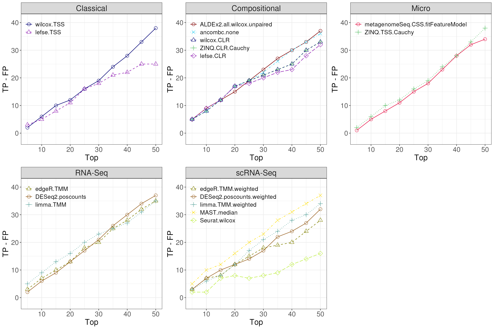
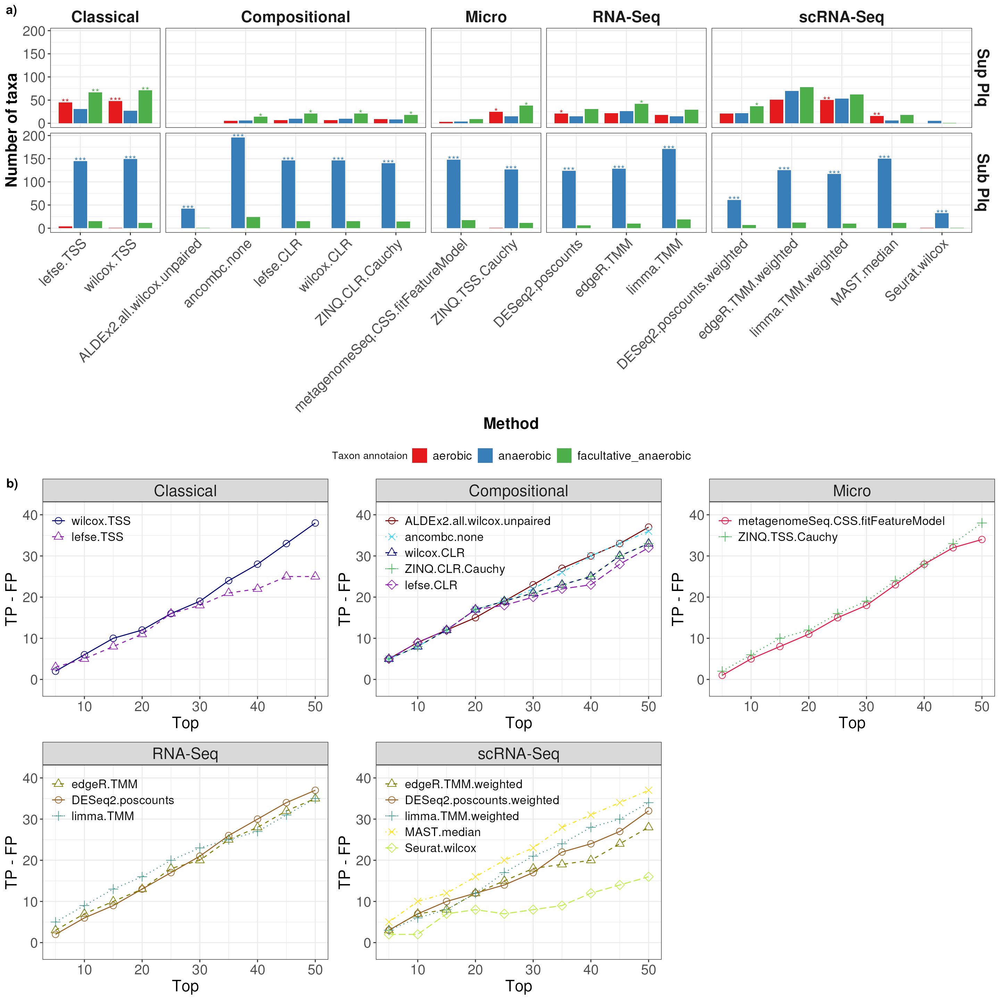

vignettes/articles/HMP_2012_16S_gingival_V35.Rmd
HMP_2012_16S_gingival_V35.Rmd
library(MicrobiomeBenchmarkDataAnalyses)
library(MicrobiomeBenchmarkData)
library(mia)
library(phyloseq)
library(benchdamic)
library(dplyr)
library(purrr)
library(ggplot2)
library(gridExtra)
library(ggpubr)Import dataset:
dat_name <- 'HMP_2012_16S_gingival_V35'
conditions_col <- 'body_subsite'
conditions <- c(condB = 'subgingival_plaque', condA = 'supragingival_plaque')
tse <- getBenchmarkData(dat_name, dryrun = FALSE)[[1]]
tse
#> class: TreeSummarizedExperiment
#> dim: 17949 311
#> metadata(0):
#> assays(1): counts
#> rownames(17949): OTU_97.1 OTU_97.10 ... OTU_97.9991 OTU_97.9995
#> rowData names(7): superkingdom phylum ... genus taxon_annotation
#> colnames(311): 700103497 700106940 ... 700111586 700109119
#> colData names(15): dataset subject_id ... sequencing_method
#> variable_region_16s
#> reducedDimNames(0):
#> mainExpName: NULL
#> altExpNames(0):
#> rowLinks: a LinkDataFrame (17949 rows)
#> rowTree: 1 phylo tree(s) (45364 leaves)
#> colLinks: NULL
#> colTree: NULLLet’s convert the col_data into a tibble (jsut for ease of handling):
col_data <- tse |>
colData() |>
as.data.frame() |>
tibble::rownames_to_column("sample_name") |>
as_tibble()Total number of subjects:
The number of male and female subjects:
col_data |>
select(subject_id, gender) |>
unique() |>
count(gender) |>
arrange(-n)
#> # A tibble: 2 × 2
#> gender n
#> <chr> <int>
#> 1 female 67
#> 2 male 65Number of subjects per visit number:
col_data |>
select(subject_id, visit_number) |>
unique() |>
count(visit_number) |>
arrange(-n)
#> # A tibble: 3 × 2
#> visit_number n
#> <dbl> <int>
#> 1 1 88
#> 2 2 76
#> 3 3 1Number of subjects per run_center:
col_data |>
select(subject_id, run_center) |>
unique() |>
count(run_center) |>
arrange(-n)
#> # A tibble: 8 × 2
#> run_center n
#> <chr> <int>
#> 1 WUGC 74
#> 2 JCVI 32
#> 3 BCM 17
#> 4 BCM,WUGC 6
#> 5 JCVI,WUGC 6
#> 6 BCM,JCVI 3
#> 7 WUGC,BCM 2
#> 8 BI,BCM 1
sample_names <- vector("list", length(subjects))
names(sample_names) <- subjects
for (i in seq_along(subjects)) {
current_subject <- subjects[i]
sub_dat <- col_data |>
filter(subject_id == current_subject) |>
slice_max(order_by = visit_number, with_ties = TRUE, n = 1)
if (nrow(sub_dat) < 2) {
next
}
lgl_vct <- all(sort(sub_dat[["body_subsite"]]) == conditions)
if (isFALSE(lgl_vct)) {
next
}
sample_names[[i]] <- sub_dat
}
sample_names <- discard(sample_names, is.null)
col_data_subset <- bind_rows(sample_names)The number of female and male samples is still practically the same
col_data_subset |>
count(gender)
#> # A tibble: 2 × 2
#> gender n
#> <chr> <int>
#> 1 female 118
#> 2 male 112
selected_samples <- col_data_subset |>
pull(sample_name)
tse_subset <- tse[, selected_samples]
tse_subset <- filterTaxa(tse_subset)
tse_subset
#> class: TreeSummarizedExperiment
#> dim: 1556 230
#> metadata(0):
#> assays(1): counts
#> rownames(1556): OTU_97.10005 OTU_97.10006 ... OTU_97.9966 OTU_97.9991
#> rowData names(7): superkingdom phylum ... genus taxon_annotation
#> colnames(230): 700103497 700103496 ... 700109120 700109119
#> colData names(15): dataset subject_id ... sequencing_method
#> variable_region_16s
#> reducedDimNames(0):
#> mainExpName: NULL
#> altExpNames(0):
#> rowLinks: a LinkDataFrame (1556 rows)
#> rowTree: 1 phylo tree(s) (45364 leaves)
#> colLinks: NULL
#> colTree: NULLOTU level:
row_data <- as.data.frame(rowData(tse_subset))
prior_info <- row_data[, c('genus', 'taxon_annotation')]
prior_info$taxon_name <- rownames(row_data)
prior_info$new_names <- paste0(prior_info$taxon_name, '|', prior_info$genus)
prior_info <-
dplyr::relocate(prior_info, taxon_name, new_names, genus, taxon_annotation)
head(prior_info)
#> taxon_name new_names genus
#> OTU_97.10005 OTU_97.10005 OTU_97.10005|Capnocytophaga Capnocytophaga
#> OTU_97.10006 OTU_97.10006 OTU_97.10006|Actinomyces Actinomyces
#> OTU_97.10007 OTU_97.10007 OTU_97.10007|Corynebacterium Corynebacterium
#> OTU_97.10081 OTU_97.10081 OTU_97.10081|NA <NA>
#> OTU_97.10093 OTU_97.10093 OTU_97.10093|NA <NA>
#> OTU_97.10103 OTU_97.10103 OTU_97.10103|Actinomyces Actinomyces
#> taxon_annotation
#> OTU_97.10005 facultative_anaerobic
#> OTU_97.10006 anaerobic
#> OTU_97.10007 aerobic
#> OTU_97.10081 <NA>
#> OTU_97.10093 <NA>
#> OTU_97.10103 anaerobicConvert to phyloseq
ps <- makePhyloseqFromTreeSummarizedExperiment(tse_subset)
sample_data(ps)[[conditions_col]] <-
factor(sample_data(ps)[[conditions_col]], levels = conditions)
ps
#> phyloseq-class experiment-level object
#> otu_table() OTU Table: [ 1556 taxa and 230 samples ]
#> sample_data() Sample Data: [ 230 samples by 15 sample variables ]
#> tax_table() Taxonomy Table: [ 1556 taxa by 5 taxonomic ranks ]
#> phy_tree() Phylogenetic Tree: [ 1556 tips and 1540 internal nodes ]Select methods for DA:
ps <- runNormalizations(set_norm_list(), ps, verbose = FALSE)
zw <- weights_ZINB(ps, design = conditions_col)
DA_methods <- set_DA_methods_list(conditions_col, conditions)
for (i in seq_along(DA_methods)) {
if (grepl("Seurat", names(DA_methods)[i])) {
names(DA_methods[[i]]$contrast) <- NULL
} else {
next
}
}
names(DA_methods)
#> [1] "DA_edgeR.1" "DA_edgeR.1" "DA_DESeq2.1"
#> [4] "DA_DESeq2.1" "DA_limma.1" "DA_limma.1"
#> [7] "DA_metagenomeSeq.1" "DA_ALDEx2.1" "DA_MAST.1"
#> [10] "DA_Seurat.1" "ancombc.1" "wilcox.3"
#> [13] "wilcox.4" "ZINQ.9" "ZINQ.10"
#> [16] "lefse.12" "lefse.13"Run all of the differential analysis (DA) methods:
tim <- system.time({
DA_output <- vector("list", length(DA_methods))
for (i in seq_along(DA_output)) {
message(
"Running method ", i, ": ", names(DA_methods)[i], " - ", Sys.time()
)
DA_output[[i]] <- tryCatch(
error = function(e) NULL,
runDA(DA_methods[i], ps, weights = zw, verbose = FALSE)
)
}
DA_output <- purrr::list_flatten(DA_output, name_spec = "{inner}")
DA_output <- purrr::discard(DA_output, is.null)
})
tim
#> user system elapsed
#> 431.333 37.774 427.635Get the column name indicating the direction of the features (increased or decreased). This is the stats output.
direction <- get_direction_cols(DA_output, conditions_col, conditions)
enrichment <- createEnrichment(
object = DA_output,
priorKnowledge = prior_info,
enrichmentCol = "taxon_annotation",
namesCol = "new_names",
slot = "pValMat", colName = "adjP", type = "pvalue",
direction = direction,
threshold_pvalue = 0.1,
threshold_logfc = 0,
top = NULL, # No top feature selected
alternative = "greater",
verbose = FALSE
)
enrich_plot <- plot_enrichment(
enrichment = enrichment,
enrichment_col = "taxon_annotation",
levels_to_plot = c("aerobic", "anaerobic", "facultative_anaerobic"),
conditions = conditions
)
p <- plot_enrichment_2(
enrich_plot,
dir = c(up = 'Sup Plq', down = 'Sub Plq')
) +
theme(
axis.title = element_text(size = 17),
axis.text = element_text(size = 15),
legend.text = element_text(size = 13),
strip.text = element_text(size = 17)
)
p
positives <- createPositives(
# object = DA_output,
object = DA_output,
priorKnowledge = prior_info,
enrichmentCol = "taxon_annotation", namesCol = "new_names",
slot = "pValMat", colName = "adjP", type = "pvalue",
# direction = direction,
direction = direction,
threshold_pvalue = 1,
threshold_logfc = 0,
top = seq.int(from = 0, to = 50, by = 5),
alternative = "greater",
verbose = FALSE,
TP = list(c("DOWN Abundant", "anaerobic"), c("UP Abundant", "aerobic")),
FP = list(c("DOWN Abundant", "aerobic"), c("UP Abundant", "anaerobic"))
) |>
left_join(get_meth_class(), by = 'method')
positive_plots <- plot_positives(positives) |>
map( ~ {
.x +
theme(
axis.title = element_text(size = 17),
axis.text = element_text(size = 15),
legend.text = element_text(size = 13),
strip.text = element_text(size = 17)
)
})
k <- grid.arrange(grobs = positive_plots, ncol = 3)

sessionInfo()
#> R version 4.4.1 (2024-06-14)
#> Platform: x86_64-pc-linux-gnu
#> Running under: Ubuntu 22.04.4 LTS
#>
#> Matrix products: default
#> BLAS: /usr/lib/x86_64-linux-gnu/openblas-pthread/libblas.so.3
#> LAPACK: /usr/lib/x86_64-linux-gnu/openblas-pthread/libopenblasp-r0.3.20.so; LAPACK version 3.10.0
#>
#> locale:
#> [1] LC_CTYPE=en_US.UTF-8 LC_NUMERIC=C
#> [3] LC_TIME=en_US.UTF-8 LC_COLLATE=en_US.UTF-8
#> [5] LC_MONETARY=en_US.UTF-8 LC_MESSAGES=en_US.UTF-8
#> [7] LC_PAPER=en_US.UTF-8 LC_NAME=C
#> [9] LC_ADDRESS=C LC_TELEPHONE=C
#> [11] LC_MEASUREMENT=en_US.UTF-8 LC_IDENTIFICATION=C
#>
#> time zone: Etc/UTC
#> tzcode source: system (glibc)
#>
#> attached base packages:
#> [1] stats4 stats graphics grDevices utils datasets methods
#> [8] base
#>
#> other attached packages:
#> [1] doRNG_1.8.6
#> [2] rngtools_1.5.2
#> [3] foreach_1.5.2
#> [4] ggpubr_0.6.0
#> [5] gridExtra_2.3
#> [6] ggplot2_3.5.1
#> [7] purrr_1.0.2
#> [8] dplyr_1.1.4
#> [9] benchdamic_1.9.4
#> [10] phyloseq_1.48.0
#> [11] mia_1.12.0
#> [12] MultiAssayExperiment_1.30.3
#> [13] MicrobiomeBenchmarkData_1.6.0
#> [14] TreeSummarizedExperiment_2.12.0
#> [15] Biostrings_2.72.1
#> [16] XVector_0.44.0
#> [17] SingleCellExperiment_1.26.0
#> [18] SummarizedExperiment_1.34.0
#> [19] Biobase_2.64.0
#> [20] GenomicRanges_1.56.1
#> [21] GenomeInfoDb_1.40.1
#> [22] IRanges_2.38.1
#> [23] S4Vectors_0.42.1
#> [24] BiocGenerics_0.50.0
#> [25] MatrixGenerics_1.16.0
#> [26] matrixStats_1.3.0
#> [27] MicrobiomeBenchmarkDataAnalyses_0.99.11
#>
#> loaded via a namespace (and not attached):
#> [1] igraph_2.0.3 ica_1.0-3
#> [3] plotly_4.10.4 Formula_1.2-5
#> [5] scater_1.32.1 zlibbioc_1.50.0
#> [7] tidyselect_1.2.1 bit_4.0.5
#> [9] doParallel_1.0.17 clue_0.3-65
#> [11] lattice_0.22-6 blob_1.2.4
#> [13] stringr_1.5.1 S4Arrays_1.4.1
#> [15] tidytext_0.4.2 parallel_4.4.1
#> [17] png_0.1-8 ZINQ_2.0
#> [19] cli_3.6.3 CVXR_1.0-14
#> [21] multtest_2.60.0 goftest_1.2-3
#> [23] pkgdown_2.1.0 textshaping_0.4.0
#> [25] bluster_1.14.0 tokenizers_0.3.0
#> [27] BiocNeighbors_1.22.0 uwot_0.2.2
#> [29] curl_5.2.1 zinbwave_1.26.0
#> [31] mime_0.12 evaluate_0.24.0
#> [33] tidytree_0.4.6 leiden_0.4.3.1
#> [35] coin_1.4-3 stringi_1.8.4
#> [37] corncob_0.4.1 backports_1.5.0
#> [39] fBasics_4041.97 desc_1.4.3
#> [41] XML_3.99-0.17 lmerTest_3.1-3
#> [43] gsl_2.1-8 Exact_3.3
#> [45] httpuv_1.6.15 Wrench_1.22.0
#> [47] AnnotationDbi_1.66.0 magrittr_2.0.3
#> [49] rappdirs_0.3.3 splines_4.4.1
#> [51] getopt_1.20.4 logistf_1.26.0
#> [53] jpeg_0.1-10 pcaPP_2.0-5
#> [55] sctransform_0.4.1 rootSolve_1.8.2.4
#> [57] ggbeeswarm_0.7.2 statip_0.2.3
#> [59] DBI_1.2.3 genefilter_1.86.0
#> [61] corpcor_1.6.10 jquerylib_0.1.4
#> [63] withr_3.0.1 formula.tools_1.7.1
#> [65] class_7.3-22 systemfonts_1.1.0
#> [67] lmtest_0.9-40 operator.tools_1.6.3
#> [69] mixOmics_6.28.0 htmlwidgets_1.6.4
#> [71] fs_1.6.4 directlabels_2024.1.21
#> [73] ggrepel_0.9.5 labeling_0.4.3
#> [75] dearseq_1.16.0 SparseArray_1.4.8
#> [77] DESeq2_1.44.0 cellranger_1.1.0
#> [79] DEoptimR_1.1-3 spatial_7.3-17
#> [81] RcppZiggurat_0.1.6 annotate_1.82.0
#> [83] lmom_3.0 truncnorm_1.0-9
#> [85] reticulate_1.38.0 zoo_1.8-12
#> [87] knitr_1.48 UCSC.utils_1.0.0
#> [89] modeest_2.4.0 decontam_1.24.0
#> [91] fansi_1.0.6 caTools_1.18.2
#> [93] patchwork_1.2.0 grid_4.4.1
#> [95] data.table_1.15.4 timeDate_4032.109
#> [97] biglm_0.9-3 rhdf5_2.48.0
#> [99] pan_1.9 vegan_2.6-6.1
#> [101] quantreg_5.98 RSpectra_0.16-2
#> [103] irlba_2.3.5.1 janeaustenr_1.0.0
#> [105] fastDummies_1.7.4 DescTools_0.99.56
#> [107] lazyeval_0.2.2 yaml_2.3.10
#> [109] ade4_1.7-22 survival_3.7-0
#> [111] scattermore_1.2 crayon_1.5.3
#> [113] RcppAnnoy_0.0.22 RColorBrewer_1.1-3
#> [115] tidyr_1.3.1 progressr_0.14.0
#> [117] later_1.3.2 zCompositions_1.5.0-4
#> [119] ggridges_0.5.6 codetools_0.2-20
#> [121] base64enc_0.1-3 KEGGREST_1.44.1
#> [123] Seurat_5.1.0 shape_1.4.6.1
#> [125] Rtsne_0.17 limma_3.60.4
#> [127] filelock_1.0.3 foreign_0.8-86
#> [129] pkgconfig_2.0.3 spatstat.univar_3.0-0
#> [131] MicrobiomeStat_1.2 rmutil_1.1.10
#> [133] spatstat.sparse_3.1-0 ape_5.8
#> [135] viridisLite_0.4.2 xtable_1.8-4
#> [137] interp_1.1-6 highr_0.11
#> [139] car_3.1-2 plyr_1.8.9
#> [141] httr_1.4.7 rbibutils_2.2.16
#> [143] tools_4.4.1 globals_0.16.3
#> [145] SeuratObject_5.0.2 Rfast_2.1.0
#> [147] broom_1.0.6 beeswarm_0.4.0
#> [149] htmlTable_2.4.3 checkmate_2.3.2
#> [151] nlme_3.1-165 dbplyr_2.5.0
#> [153] MatrixModels_0.5-3 lme4_1.1-35.5
#> [155] digest_0.6.37 optparse_1.7.5
#> [157] permute_0.9-7 numDeriv_2016.8-1.1
#> [159] Matrix_1.7-0 farver_2.1.2
#> [161] reshape2_1.4.4 SnowballC_0.7.1
#> [163] yulab.utils_0.1.6 viridis_0.6.5
#> [165] DirichletMultinomial_1.46.0 rpart_4.1.23
#> [167] mice_3.16.0 glue_1.7.0
#> [169] cachem_1.1.0 BiocFileCache_2.12.0
#> [171] polyclip_1.10-7 Hmisc_5.1-3
#> [173] generics_0.1.3 CompQuadForm_1.4.3
#> [175] mvtnorm_1.2-6 NADA_1.6-1.1
#> [177] metagenomeSeq_1.46.0 survey_4.4-2
#> [179] parallelly_1.38.0 statmod_1.5.0
#> [181] biomformat_1.32.0 RcppHNSW_0.6.0
#> [183] ragg_1.3.2 ScaledMatrix_1.12.0
#> [185] carData_3.0-5 minqa_1.2.8
#> [187] pbapply_1.7-2 httr2_1.0.3
#> [189] ANCOMBC_2.6.0 timeSeries_4032.109
#> [191] glmnet_4.1-8 spam_2.10-0
#> [193] utf8_1.2.4 ALDEx2_1.36.0
#> [195] mitools_2.4 gtools_3.9.5
#> [197] readxl_1.4.3 softImpute_1.4-1
#> [199] ggsignif_0.6.4 shiny_1.9.1
#> [201] GenomeInfoDbData_1.2.12 energy_1.7-12
#> [203] rhdf5filters_1.16.0 memoise_2.0.1
#> [205] rmarkdown_2.28 scales_1.3.0
#> [207] stabledist_0.7-2 gld_2.6.6
#> [209] future_1.34.0 RANN_2.6.2
#> [211] spatstat.data_3.1-2 rstudioapi_0.16.0
#> [213] cluster_2.1.6 Maaslin2_1.18.0
#> [215] hms_1.1.3 GUniFrac_1.8
#> [217] spatstat.utils_3.1-0 fitdistrplus_1.2-1
#> [219] munsell_0.5.1 cowplot_1.1.3
#> [221] ellipse_0.5.0 colorspace_2.1-1
#> [223] jomo_2.7-6 rlang_1.1.4
#> [225] ggdendro_0.2.0 quadprog_1.5-8
#> [227] DelayedMatrixStats_1.26.0 sparseMatrixStats_1.16.0
#> [229] dotCall64_1.1-1 scuttle_1.14.0
#> [231] mgcv_1.9-1 xfun_0.47
#> [233] NOISeq_2.48.0 e1071_1.7-14
#> [235] TH.data_1.1-2 rARPACK_0.11-0
#> [237] iterators_1.0.14 modeltools_0.2-23
#> [239] abind_1.4-5 tibble_3.2.1
#> [241] libcoin_1.0-10 treeio_1.28.0
#> [243] gmp_0.7-5 Rhdf5lib_1.26.0
#> [245] DECIPHER_3.0.0 bitops_1.0-8
#> [247] Rdpack_2.6.1 promises_1.3.0
#> [249] inline_0.3.19 RSQLite_2.3.7
#> [251] sandwich_3.1-0 DelayedArray_0.30.1
#> [253] proxy_0.4-27 Rmpfr_0.9-5
#> [255] compiler_4.4.1 forcats_1.0.0
#> [257] prettyunits_1.2.0 boot_1.3-30
#> [259] beachmat_2.20.0 SparseM_1.84-2
#> [261] microbiome_1.26.0 listenv_0.9.1
#> [263] Rcpp_1.0.13 edgeR_4.2.1
#> [265] BiocSingular_1.20.0 tensor_1.5
#> [267] progress_1.2.3 MASS_7.3-61
#> [269] BiocParallel_1.38.0 MAST_1.30.0
#> [271] stable_1.1.6 spatstat.random_3.3-1
#> [273] R6_2.5.1 rstatix_0.7.2
#> [275] fastmap_1.2.0 multcomp_1.4-26
#> [277] vipor_0.4.7 ROCR_1.0-11
#> [279] mitml_0.4-5 rsvd_1.0.5
#> [281] nnet_7.3-19 gtable_0.3.5
#> [283] KernSmooth_2.23-24 latticeExtra_0.6-30
#> [285] miniUI_0.1.1.1 deldir_2.0-4
#> [287] htmltools_0.5.8.1 RcppParallel_5.1.9
#> [289] bit64_4.0.5 spatstat.explore_3.3-2
#> [291] lifecycle_1.0.4 MGLM_0.2.1
#> [293] nloptr_2.1.1 sass_0.4.9
#> [295] vctrs_0.6.5 robustbase_0.99-4
#> [297] spatstat.geom_3.3-2 sp_2.1-4
#> [299] future.apply_1.11.2 bslib_0.8.0
#> [301] pillar_1.9.0 gplots_3.1.3.1
#> [303] locfit_1.5-9.10 jsonlite_1.8.8
#> [305] expm_1.0-0